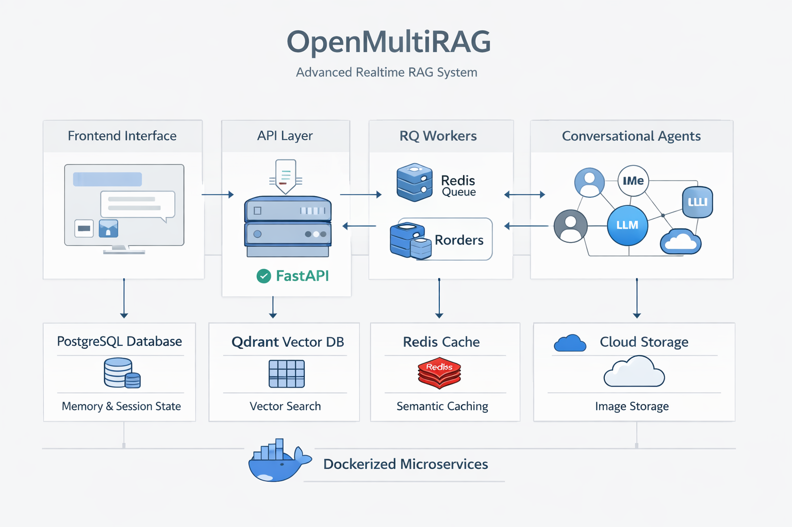

OpenMultiRAG is an industry-grade, realtime Retrieval-Augmented Generation (RAG) system built to handle multiple documents, complex conversational workflows, multimodal parsing (text + images), strict citation tracking, and intelligent caching.
The platform is designed using a robust microservices architecture encapsulated in Docker, ensuring seamless and resilient user experiences.

The project consists of several interconnected components running asynchronously:
Robust Memory & Session State: Leverages LangGraph's AsyncPostgresSaver integrated tightly with PostgreSQL for persistent thread-level memory, allowing seamless context restoration.
Smart Semantic Caching: Uses Redis as a highly efficient semantic cache layer. Identical document scope queries hit the cache, natively bypassing LLM generation to reduce latency and costs.
Asynchronous Multimodal Pipeline: Connects a ThreadPoolExecutor for concurrent layout parsing. Vision LLMs (Llama-3.2-Vision/Scout) caption embedded images, which are embedded as contextual text while raw images are stored safely in CloudFlare R2.
Bulletproof Source Tracking: A custom citation engine explicitly maps contextual chunks to output, rendering exact File and Page Numbers along with relevant images on the frontend.
FastAPI, Streamlit, LangGraph, Groq (Llama-3.3-70b, Llama-3.1-8b, Llama-Vision), Qdrant, PostgreSQL, Redis, Langfuse, Docker